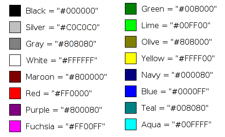

En este apartado veremos algunas etiquetas que sirven para dar forma al texto: cursiva, negrita, subrayado, tipos de letra, tamaños, etc.
No obstante, se debe tener cuidado con estas etiquetas, ya que la mayoría han quedado obsoletas. Esto se debe a que HTML debe utilizarse únicamente para estructurar el texto, no para dar formato ni mejorar la estética de la página: eso es tarea de las hojas de estilo CSS que veremos en el tema siguiente.
Así, esta sección se ha dividido en dos partes: en la primera se explican las etiquetas que se siguen utilizando y en la segunda las que han quedado obsoletas. Las etiquetas obsoletas sólo se utilizarán en los ejercicios de esta sección, pero en ninguno más.
Señalar que se pueden combinar estas etiquetas para producir varios efectos a la vez: se puede subrayar y poner en negrita, o poner en cursiva y cambiar el tipo de letra, etc. Sólo es necesario cerrar las etiquetas de manera correcta (es decir, inversamente a como se han abierto, tal como se explicó en la sección de Introducción a HTML).
Son elementos de línea, por tanto, no hacen salto de línea y se pueden introducir dentro de un párrafo <p>
Texto con formato previo
Sirve para que el navegador visualice el texto tal y como aparece en el contenido de esta etiqueta, respetando tabuladores, espacios y saltos de línea.
La única excepción es que introduzcamos en el contenido otros elementos HTML, los cuales se ejecutarán también.
Etiqueta final obligatoria
<pre>
EJEMPLO
de
Texto
Preformateado
</pre>
Produce el siguiente resultado;
EJEMPLO
de
Texto
Preformateado
Etiquetas que se siguen utilizando
<strong> <em> <tt><big><small>Negrita
Para resaltar un trozo de texto en negrita se utilizan las etiquetas <strong> </strong>. Estas etiquetas pueden (y deben) utilizarse dentro de las etiquetas de párrafo. Por ejemplo, el código siguiente:
<p>Este texto forma parte de un párrafo. Y esta <strong>palabra</strong> está en <strong>negrita</strong> dentro del mismo párrafo.</p>Produce el siguiente resultado;
Esta etiqueta tiene un sinónimo (obsoleto): en lugar de utilizar <strong> y </strong> se puede utilizar también <b> </b>
Cursiva
Para resaltar un trozo de texto en cursiva se utilizan las etiquetas <em> </em>. Estas etiquetas pueden (y deben) utilizarse dentro de las etiquetas de párrafo. Por ejemplo, el código siguiente:
<p>Este texto forma parte de un párrafo. Y esta <em>palabra</em> está en <em>cursiva</em> dentro del mismo párrafo.</p>Produce el siguiente resultado;
Esta etiqueta tiene un sinónimo (obsoleto): en lugar de utilizar <em> y </em> se puede utilizar también <i> </i>
Texto monoespaciado
Para que un trozo de texto se represente con letras monoespaciadas (también llamado teletipo, dado que cada letra ocupa el mismo espacio) se utilizan las etiquetas <tt> </tt>. Estas etiquetas pueden (y deben) utilizarse dentro de las etiquetas de párrafo. Por ejemplo, el código siguiente:
<p>Este texto forma parte de un párrafo. Y esta <tt>palabra</tt> está en <tt>modo teletipo</tt> dentro del mismo párrafo.</p>Produce el siguiente resultado;
Tamaño de letra grande
Para resaltar un trozo de texto con un tamaño de letra mayor se utilizan las etiquetas <big> </big>. Estas etiquetas pueden (y deben) utilizarse dentro de las etiquetas de párrafo. Por ejemplo, el código siguiente:
<p>Este texto forma parte de un párrafo. Y esta <big>palabra</big> está en <big>tamaño grande</big> dentro del mismo párrafo.</p>Produce el siguiente resultado;
Tamaño de letra pequeño
Para resaltar un trozo de texto con un tamaño de letra más pequeño se utilizan las etiquetas <small> </small>. Estas etiquetas pueden (y deben) utilizarse dentro de las etiquetas de párrafo. Por ejemplo, el código siguiente:
<p>Este texto forma parte de un párrafo. Y esta <small>palabra</small> está en <small>tamaño pequeño</small> dentro del mismo párrafo.</p>Produce el siguiente resultado;
Etiquetas obsoletas (no deben utilizarse)
Negrita
Tal y como se ha indicado anteriormente, las etiquetas <b> </b> se pueden utilizar para resaltar un texto en negrita.
Cursiva
De igual manera, las etiquetas <i> </i> se pueden utilizar para resaltar un texto en cursiva.
Subrayado
Para resaltar un trozo de texto en subrayado se utilizan las etiquetas <u> </u>. Estas etiquetas pueden (y deben) utilizarse dentro de las etiquetas de párrafo. Por ejemplo, el código siguiente:
<p>Este texto forma parte de un párrafo. Y esta <u>palabra</u> está <u>subrayada</u> dentro del mismo párrafo.</p>Produce el siguiente resultado;
Tachado
Para tachar un trozo de texto con una línea a media altura se utilizan las etiquetas <s> </s> y <strike> </strike>. Por ejemplo, el código siguiente:
<p>Este texto forma parte de un párrafo. Y esta <s>palabra</s> está <strike>tachada</strike> dentro del mismo párrafo.</p>Produce el siguiente resultado;
Cambiar el tipo de letra: la etiqueta <font>
Etiqueta de cierre obligatorio
Está desaprobada
Para resaltar un trozo de texto cambiando su tipo, color o tamaño de letra se utilizan las etiquetas <font> </font>. Estas etiquetas pueden (y deben) utilizarse dentro de las etiquetas de párrafo. Para controlar los aspectos del texto que se pretenden cambiar se utilizan los siguientes atributos dentro de la etiqueta:
- Atributo size. Permite cambiar el tamaño de la letra. Puede tomar valores entre 1 y 7.
- Atributo face. Permite cambiar la familia o tipo de letra. Los valores que toma se corresponden con un tipo de letra: Arial, Tahoma, etc.
- Atributo color. Permite cambiar el color de la letra. Puede tomar valores hexadecimales precedidos por el signo # seguido de tres parejas de dígitos hexadecimales que siguen el esquema RRGGBB (los dos primeros indican el nivel de rojo, los de enmedio el de verde y los de la derecha el de azul) o nombres de colores. En el siguiente enlace puedes consultar más información sobre los colores HTML: colores HTML en la wikipedia. Y en el siguiente enlace tienes un editor de colores que proporciona su valor hexadecimal: Editor de colores. En la imagen que se muestra a continuación aparecen los colores que se pueden utilizar con su nombre:

Se puede utilizar uno, dos o tres atributos a la vez dentro de la misma etiqueta <font>. Hay que recordar que el valor de los atributos se pone siempre entre comillas. Por ejemplo, el código siguiente:
<p><font color="green" face="Arial">Esta frase está en color verde y letra Arial.</font> <font color="#FF0000" size="6">Esta frase está en color rojo y tiene tamaño 6.</font> <font face="Times">Y esta frase está en letra Times.</font></p>Produce el siguiente resultado;